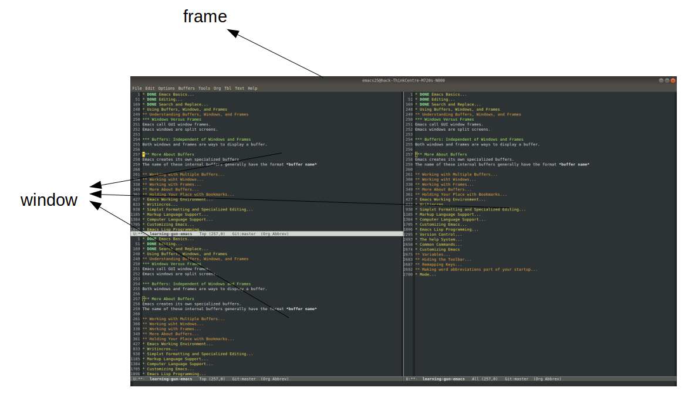
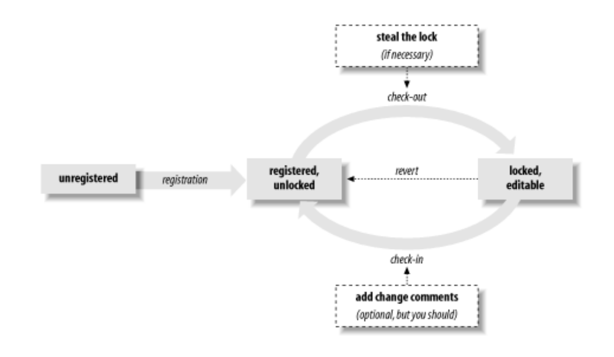
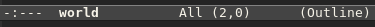
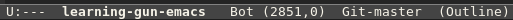
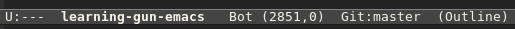

Table of Contents
- 1. DONE Emacs Basics
- 2. DONE Editing
- 3. DONE Search and Replace
- 4. DONE Using Buffers, Windows, and Frames
- 5. DONE Emacs Working Environment
- 6. DONE Writing Macros (C-x C-k)
- 7. DONE Simple text Formatting and Specialized Editing
- 8. DONE The Help System (C-h C-h or C-h ?)
- 9. DONE Common Commands
- 10. DONE Customizing Emacs
- 11. DONE Mode
- 12. DONE Version Control
- 12.1. The Uses of Version Control
- 12.2. Version Control Concepts
- 12.3. How VC Helps with Basci Operations
- 12.4. Editing Comment Buffers
- 12.5. VC Command Summary
- 12.6. VC Mode Indicators
- 12.7. When VC Gets Confused
- 12.8. Customizing VC
- 12.9. What VC Is Not
- 12.10. Using VC Effectively
- 12.11. Comparing with Ediff
- 13. TODO Computer Language Support
1 DONE Emacs Basics
1.1 Introducing Emacs
Emacs is important because of the integration of different things you need to do. Any editor, no matter how simpler or complex, has the same basic functions. If you can learn one, you can learn any of them. Learning to use an editor is basically a matter of learning finger habit. Good finger habits can make you an incredibly fast typist. Intellectually, it's possible to absorb a lot from one reading, but you can form only a few new habit each day. Don't feel obliged to learn them all at once; pick something, practice it, and move on to the next topic. Time spent developing good habits is time well spent.
1.2 Understanding Files and Buffers
You don't really edit files. Instead, Emacs copies the content of a file into a temporary buffer and you edit that. The file on disk doesn't change until you save the buffer.
1.3 A Word About Modes
mode: Emacs becomes sensitive to the task at hand. Modes allows Emacs to the kind of editor you want for different tasks. A buffer can be in only one major mode at a time.
minor modes: defines a particular aspect of Emacs's behavior and can be turned on and off within a major mode.
If you are good at Lisp programming, you can add your own modes. Emacs is almost infinitely extensible.
1.4 Emacs commands
How do you give commands?
Each command has a formal name, which is the name of a Lisp routine. Some command names are quite long. As a result, we need some way to abbreviate commands. Emacs ties a command name to a short sequence of keystrokes. This tying of commands to keystrokes is known as binding.
The author of Emacs try to bind the most frequently used commands to the key sequences that are the easiest to reach:
- The most commonly used commands are bound to C-n(where n is any character).
- Slightly less commonly used commands are bound to M-n.
- Other commonly used commands are bound to C-x something.
- Some specialized commands are bound to C-c something. These commands often relate to one of the more specialized modes, such as Java or HTML mode.
- typing M-x long-command-name Enter.(This works for any command really)
You should define your own key bindings if you find yourself using the long form of a command all the time.
1.5 File
| Bounding | Function |
|---|---|
| C-x C-f | find-file |
| C-x C-v | find-alternate-file |
| C-x i | insert-file |
| C-x C-s | save-buffer |
| C-x C-w | write-file |
1.6 Leaving Emacs
C-x C-c
1.7 Getting Help
C-h C-h
1.8 Version
M-x version
1.9 Access Menus With Keyboard
F10
2 DONE Editing
Emacs offers lots of ways to move around in files. The more ways you learn, the fewer keystrokes you'll need to get to the part of the file you want to edit. Learning any editor is primarily a matter of forming certain finger habits rather than memorizing what the book says. You will learn the right finger habits only if you start typing.
2.1 Moving the Cursor
It's easier to memorize commands if you remember what the letters stand for.
2.1.1 Basic Cursor Motion
| Boudning | Function |
|---|---|
| C-f | forward-char |
| C-b | backward-char |
| M-f | forward-word |
| M-b | backward-word |
| C-n | next-line |
| C-p | previous-line |
| C-a | beginning-of-line |
| C-e | end-of-line |
| M-a | backward-sentence |
| M-e | forward-sentence |
| M-} | forward-paragraph |
| M-{ | backward-paragraph |
| C-x ] | forward-page |
| C-x [ | backward-page |
Ctrl command generally move in small units than their associated Meta commands.
2.1.2 Moving a Screen (or More) at a Time
| Bounding | Function |
|---|---|
| C-v | scroll-up-command |
| M-v | scroll-down-command |
| M-> | end-of-buffer |
| M-< | beginning-of-buffer |
| goto-line | |
| goto-char | |
| C-M-v | scroll-other-window |
2.2 Deleting Text
| Bounding | Function |
|---|---|
| Del | delete-backward-char |
| C-d | delete-char |
| M-Del | backward-kill-word |
| M-d | kill-word |
| C-k | kill-line |
| M-k | kill-sentence |
| C-x Del | backward-kill-sentence |
2.3 The Kill Ring
In Emacs, killing is not fatal, but in fact, quite the opposite. Text that has been killed is not gone forever but is hidden in an area called the kill ring. The kill ring is an internal storage area where Emacs put things you've copied or deleted.
What exactly goes into the kill ring?
About the only thing that Emacs doesn't save in the kill ring is single characters, deleted with Del or C-d.
Emacs is clever about what it puts into the kill ring. When it is assembling a big block of text from a group of deletions, it always assembles the text correctly.
Emacs stops assembling these blocks of text as soon as you give any comand that isn't a kill command.
| Bounding | Function |
| C-y | yank |
| M-y | yank-pop |
2.4 Marking Text to Delete, Move, or Copy
In Emacs, you select text by defining an area called a region. To define a region, you use a secondary pointer called a mark. You set the mark at one end of the region by pressing C-Space or C-@, then move the cursor to the other end of the region.
| Bounding | Function |
|---|---|
| C-Space | set-mark-command |
| C-@ | set-mark-command |
| C-x C-x | exchange-point-and-mark |
| M-h | mark-paragraph |
| C-x h | mark-whole-buffer |
| C-x C-p | mark-page |
| C-w | kill-region |
| M-w | kill-ring-save |
2.5 Editing Tricks and Shortcuts
2.5.1 Fixing Transpositions
| Bounding | Function |
|---|---|
| C-t | transpose-char |
| M-t | transpose-word |
| C-x C-t | transpose-lines |
| transpose-sentence | |
| transpose-paragraph |
2.5.2 Changing Capitalization
| Bounding | Function | Description |
|---|---|---|
| M-c | capitalize-word | base on the point |
| M-u | upcase-word | base on the point |
| M-l | downcase-word | base on the point |
2.6 Undoing Changes
| Bounding | Function | Description |
|---|---|---|
| revert-buffer | Replace current buffer text with the text of the visited file on disk. | |
| recover-file | Visit file FILE, but get contents from its last auto-save file. | |
| Name | Definition |
|---|---|
| backup file | the same as the name of the file, with a tilde(~) added. |
| auto-save file | the same as the name of the file, with a sharp(#) added to the beginning and the end. |
3 DONE Search and Replace
3.1 Different Kinds of Searches
| Kind | Meaning |
|---|---|
| simple search | You give Emacs a search string, and it finds the next occurrence. |
| incremental search | Emacs starts to search the file as soon as you type the first character of a search string. It continues to search as you type more characters. |
| word search | A word search is like a simple search, except that Emacs searches only for full words and phrases. |
| regular search | To search for patterns, you can use a regular expression search. |
| incremental regular expression search | This search procedure is a combination of an incremental search and a regular expression search. |
By default, searches are case-insensitive. One exception: if you type any uppercase letters, Emacs makes the whole search string case-sensitive.
Don't be intimidated by the wealth of searches that are available. In practice, you'll probably settle on one search command and one replace command and use these for 99 percent of your work. However, if you know what's available, you'll be able to make use of the other search commands when they become useful.
3.1.1 Incremental Search checked
| Bounding | Function | Description |
|---|---|---|
| C-s | isearch-forward | |
| C-r | isearch-backward | |
| Enter | isearch-exit | |
| C-s C-w | isearch-yank-word | search the word under the cursor |
| C-s M-y | isearch-yank-kill | pull string from kill into search string |
| C-s C-s | isearch-repeat-forward | |
| C-r C-r | isearch-repeat-backward |
3.1.2 Word Search
| Bounding | Function |
|---|---|
| word-search-forward | |
| word-search-backward |
3.2 Search and Replace
| Bounding | Function | Description |
|---|---|---|
| replace-string | ||
| M-% | query-replace |
3.2.1 Recursive Editing
To start a recursive edit while in query-replae, press C-r. When you start a recursive edit, square brackets([]) appear on the mode line. C-M-c to exit the recursive mode.
In fact, you can start a recursive edit at any time, not just when you're in a query-replace. The command M-x recursive-edit Enter puts you into a recursive edit; C-M-c takes you out of the recursive edit and brings you back to what you were doing before.
3.2.2 Regular Expressions for Search and Replacement Operations
| Bounding | Function | Description |
|---|---|---|
| C-M-s | isearch-forward-regexp | |
| C-M-r | isearch-backward-regexp | |
| C-M-% | query-replace-regexp |
3.3 Checking Spelling Using Ispell
| Bounding | Function | Description |
|---|---|---|
| M-$ | ispell-word | |
| ispell-buffer | ||
| C-M-i | ispell-complete-word | shadowed in org mode |
3.4 Word Abbreviations
When you define abbreviations, never use abbreviations that are words in their own right or Emacs may expand the word when you don't want it to, because expansion takes place without asking.
Emacs classifies abbreviations according to which modes they work in. Global abbreviations work in all modes. Local abbreviations work only in the mode in which they were defined.
First, you should enable minor mode: abbrev-mode.
| Bounding | Function | Description |
|---|---|---|
| C-x a i g | inverse-add-global-abbrev | |
| C-x a i l | inverse-add-mode-abbrev | |
| list-abbrevs | ||
| edit-abbrevs | ||
| kill-all-abbrevs | disables word abbreviation for the current session | |
| unexpand-abbrev | undo the last word abbreviation | |
4 DONE Using Buffers, Windows, and Frames
4.1 Understanding Buffers, Windows, and Frames

Emacs call GUI window frames. Emacs windows are split screens. Both windows and frames are ways to display a buffer. Emacs creates its own specialized buffers. The name of these internal buffers generally have the format buffer name
4.2 Working with Multiple Buffers
| Bounding | Function | Description |
|---|---|---|
| C-x b | switch-to-buffer | |
| C-x C-b | list-buffers | C-h m to get a help about this mode |
| C-x k | kill-buffer | |
| C-x s | save-some-buffer |
4.3 Working wiht Windows
| Bounding | Function | Description |
|---|---|---|
| C-x o | other-window | |
| C-x 0 | delete-window | |
| C-x 1 | delete-other-window | |
| C-x 2 | split-window-vertically | |
| C-x 3 | split-window-right | |
| C-x > | scroll-right | |
| C-x < | scroll-left | |
| C-x ^ | enlarge-window | |
| shrink-window | ||
| C-x } | enlarge-window-horizontally | |
| C-x { | shrink-window-horizontally | |
| C-x - | shrink-window-if-large-than-buffer | |
| C-x + | balance-window |
4.4 Working with Frames
| Bounding | Function | Description |
| C-x 5 o | other-frame | |
| C-x 5 0 | delete-frame | |
| C-x 5 1 | delete-other-frame | |
| C-x 5 2 | make-frame-command |
4.5 More About Buffers
| Bounding | Function | Description |
|---|---|---|
| rename-buffer | ||
| C-x C-q | read-only-mode | toggle read only mode |
| C-x 4 r | find-file-read-only-other-window | open a file as read-only in a new window |
| C-x 5 r | find-file-read-only-other-frame | open a file as read-only in a new frame |
4.6 Holding Your Place with Bookmarks
| Bounding | Function | Description |
|---|---|---|
| C-x r m | bookmark-set | mark the point |
| C-x r b | bookmark-jump | |
| C-x r l | bookmark-bmenu-list | C-h m for help |
| bookmark-rename | ||
| bookmark-delete | ||
| bookmark-save |
5 DONE Emacs Working Environment
5.1 Executing Commands in Shell Buffers
| Bounding | Function | Description |
|---|---|---|
| M-! | shell-command | |
| shell | In shell mode, precede control characters with C-c |
M-| : shell-command-on-region
You can have multiple shell buffers running at once; just use the command M-x rename-uniquely to rename your shell buffer. Then type M-x shell to open a new one.
5.2 Using Dired, the Directory Editor
Remember, in the directory editor you are working directly with files, not with buffers.
Operation:
| Bounding | Function | Description | Hack |
|---|---|---|---|
| v | dired-view-file | read-only, q to quit | |
| RET | dired-find-file | C-x b to get back | |
| x | dired-do-flagged-delete | ||
| D | dired-do-delete | ||
| C | dired-do-copy | ||
| R | dired-do-rename | ||
| %l | dired-downcase | Rename all marked (or next ARG) files to lower case. | |
| %u | dired-upcase | Rename all marked (or next ARG) files to upper case. | |
| Z | dired-do-compress | compress or uncompress marked or next ARG) files | |
| = | dired-diff | ||
| ! | dired-do-shell-command | ||
| g | revert-buffer | Replace current buffer text with the text of the visited file on disk. | |
| + | dired-create-directory | ||
| Q | dired-do-query-replace | ||
| A | dired-do-find-regexp | Find all matches for REGEXP in all marked files. | very usefull |
Marking: (Once you mark files with an asterisk, emacs assumes that any command you issue is meant for these files.)
| Bounding | Function | Description |
|---|---|---|
| m | dired-mark | |
| 3m | marks this file and the next two files | |
| M-Del | dired-unmark-all-files | |
| t | dired-toggle-marks | |
| * * | dired-mark-excutables | |
| * @ | dired-mark-symlinks | |
| * / | dired-mark-directories | |
| % m | dired-mark-files-regexp | |
| % g | dired-mark-files-containing-regexp | |
| dired-flag-garbage-files | ||
| d | dired-flag-file-deletion | |
| # | dired-flag-auto-save-files | |
| ~ | dired-flag-backup-files | |
| u | dired-unmark | |
| Del | dired-unmark-backward |
Navigating:
| Bounding | Function | Description |
|---|---|---|
| ^ | dired-up-directory | |
| > | dired-next-dirline | |
| < | dired-prev-dirline | |
| i | dired-maybe-insert-subdir | Insert this subdirectory into the same dired buffer. |
5.3 Reading Manpages in Emacs
| Bounding | Function | Description |
|---|---|---|
| man | like man in unix-like |
5.4 Using Time Management Tools
| Bounding | Function | Description |
|---|---|---|
| calendar |
6 DONE Writing Macros (C-x C-k)
In Emacs, a macro is simply a group of recorded keystrokes you can play back over and over again. Macros are a great way to save yourself repetitive work.
The key to using macros well is:
- recognizing when you're doing repetitive work.
- figuring out a set of keystrokes that will do exactly what you want.
6.1 Macro
| Bounding | Function | Description |
|---|---|---|
| C-x ( | kmacro-start-macro | |
| C-x ) | kmacro-end-macro | |
| C-x e | kmacro-end-and-call-macro | |
| C-x C-k e | edit-kbd-macro | |
| C-x C-k C-d | kmacro-delete-ring-head | delete |
| C-x C-k C-t | kmacro-swap-ring | transpose |
| C-x C-k C-p | kmacro-cycle-ring-previous | previous |
| C-x C-k C-n | kmacro-cycle-ring-next | next |
| C-x C-k b | kmacro-bind-to-key | binding a macro command to a key in this way works for only one session. |
| C-x C-k n | kmacro-name-last-macro | name |
| insert-kbd-macro | ||
| C-x C-k r | apply-macro-to-region-lines | region; automatically applied on each line |
| C-x q | kbd-macro-query | query user during kbd macro execution |
| C-u C-x q | to enter recursive edit | |
| C-M-c | exit-recursive-edit |
A macro ring, much like the kill ring, allows you to access a number of macros during an Emacs session.
6.2 Tips for Creating Good Macros
Good macros work in all situations.
Tips:
- use commands that are absolute rather than relative.
- type the search argument (as in C-s searchstring ) rather than using the command to repeat the last search (C-s C-s ).
- add extra commands (typically C-a and C-e ) that aren't strictly necessary, just to make sure that you're positioned correctly on the line.
Good macros have three parts:
- They find the place you want the macro to start working (often using search).
- They do the work that needs to be done on the text.
- They prepare themselves to repeat.
6.3 Naming, Saving, and Executing Your Macros
1. define a macro 2. name it with C-x C-k n 3. open a file 4. M-x insert-kbd-macro Enter macroname Enter 5. add (load-file "<your macro file>") to .emacs 6. add (global-set-key "\C-x\C-k<your key>" '<your macro name>) to .emacs
7 DONE Simple text Formatting and Specialized Editing
7.1 Changing Tabs to Spaces(and Vice Versa)
| Bounding | Function | Description |
|---|---|---|
| untabify | ||
| tabify |
7.2 Indenting Text
| Bounding | Function | Description |
|---|---|---|
| M-q | fill-paragraph | |
| C-M-o | split-line | Split current line, moving portion beyond point vertically down. |
7.3 Centering Text
| Bounding | Function | Description |
|---|---|---|
| M-o M-s | center-line | |
| M-o M-S | center-paragraph | |
| center-region |
7.4 Using Outline Mode (C-c)
| Bounding | Function | Description |
|---|---|---|
| C-c C-n | outline-next-visible-heading | |
| C-c C-p | outline-previous-visible-heading | |
| C-c C-f | outline-forward-same-level | |
| C-c C-b | outline-backward-same-level | |
| C-c C-u | outline-up-heading | |
| C-c C-k | outline-show-brances | show all subheadings of this heading, but not their bodies |
| C-c Tab | outline-show-children | show all direct subheadings of this heading |
| C-c @ | outline-mark-subtree | mark the current header and all subleveles |
7.5 Rectangle Editing (C-x r)
Before working with columns, select the buffer with C-x h and untabify it by typing M-x untabify. Rectangle editing works best with files that do not contain tab characters.
| Bounding | Function | Description |
|---|---|---|
| C-x r k | kill-rectangle | kill |
| C-x r y | yank-rectangle | yank |
| C-x r c | clear-rectangle | clear, blank out the region-rectangle |
| C-x r o | open-rectagnle | open |
| C-x r r r | copy-rectangle-to-register | Copy rectangle to register r (where r is any character) |
| C-x r i r | insert-register | Insert rectangle from register r (where r is any character). |
8 DONE The Help System (C-h C-h or C-h ?)
C-h b produces quite a lot of output.
If you want to limit this output to only those key bindings with a particular prefix, type that prefix followed by C-h.
For example:
C-x C-h C-c C-h
Many of the more complicated emacs commands include their own sets of help keystrokes.
These commands often have their own help functionality, but help is invoked with ? rather than the standard help key.
9 DONE Common Commands
| Bounding | Functions | Description |
|---|---|---|
| C-/ | undo | |
| C-q | quoted-insert | useful for inserting control characters. |
| M-n | digit-argument | |
| C-u | universal-argument | |
| M-- | negative-argument | |
| C-l | recenter | |
| C-g | keyboard-quit | |
| C-x Esc Esc | repeat-complex-command | |
| C-x M-: | repeat-complex-command | You can use the minibuffer history commands M-n and M-p to get different commands to edit and resubmit. |
| C-x z | repeat | Repeat most recently executed command. |
| M-/ | dabbrev-expand | |
| M-m | back-to-indentation | Move point to the first non-whitespace character on this line. |
| C-M-\ | indent-region | |
| C-x Tab | indent-rigidly | |
| M-g M-g | goto-line | |
| C-x C-e | eval-last-sexp | |
| C-M-f | forward-sexp | |
| C-M-b | backward-sexp | |
| C-M-h | mark-defun | |
| C-c C-x C-v | org-toggle-inline-images | in org mode |
| M-p | previous-history-element | |
| M-n | next-history-element | |
| M-r | previous-matching-history-element | |
| M-s | next-matching-history-element | |
| M-j | indent-new-comment-line | Break line at point and indent, continuing comment if within one. |
| rgrep |
10 DONE Customizing Emacs
three ways to customize Emacs:
- Options
- Custom
- Lisp code
No matter what method you use, though, the .emacs startup file is modified. Custom modifies it for you when you save settings through that interface. The Options menu invokes Custom behind the scenes; when you choose Save Options, Custom again modifies .emacs.
10.1 Using Custom
| Bounding | Function | Description |
|---|---|---|
| customize |
10.2 Configuration Load Order When Start Up
Loading order:
- site-start.el
- configuration
- .emacs.elc (compiled version of .emacs.el)
- .emacs.el
- .emacs
- .emacs.elc (compiled version of .emacs.el)
- default.el
10.3 Customizing Your Key Bindings
| Term | Description |
|---|---|
| keymap | a collection of key bindings |
| global-map | the most basic default key bindings |
| local-map | specific to a single buffer |
| ctl-x-map | keymap for C-x |
| esc-map | keymap for Esc |
When you type a key, Emacs first looks it up in the current buffer's local map (if any). If it doesn't find an entry there, it looks in global-map.
What happens with commands that are bound to multiple keystrokes?
The answer is that the keys C-x , Esc , and C-c are actually bound to special internal functions that cause Emacs to wait for another key to be pressed and then to look up that key's binding in another map.
Caution: You can use Meta in place of Esc , but the bindings are still stored in the esc-map .
Three ways to define your own key bindings:
(define-key keymap "keystroke" 'command-name) (global-set-key "keystroke" 'command-name) (local-set-key "keystroke" 'command-name)
Special character conventions:
| Special Character | Definition |
|---|---|
| \C-x | C-x (where x is any letter) |
| \C-[ or \e | Esc |
| \M | Meta |
| \C-j or \n | Newline |
| \C-m or \r | Enter |
| \C-i or \t | Tab |
Note that control characters are case-insensitive — that is, \C-A is the same thing as \C-a. However, the characters that follow control characters may be case-sensitive; \C-ae could be different from \C-aE .
The function define-key is the most general because it can be used to bind keys in any keymap.
(global-set-key "\C-xl" 'goto-line) equal to (define-key global-map "\C-xl" 'goto-line) (define-key ctl-x-map "l" 'goto-line)
Two ways to make the change in your .emacs to take effect:
| Bounding | Function | Description |
|---|---|---|
| eval-buffer | ||
| C-x C-e | eval-last-sexp |
To unset key bindings:
(global-unset key "\C-xl") (define-key ctl-x-map "l" nil)
10.4 Setting Emacs Variables
To set the value of a variable, use the setq function in your .emacs.
(setq variable-name variable-value)
Several Emacs variables can have different values for each buffer (local values) as well as a default value. Such variables assume their default values in buffers where the local values are not specified.
When you set the value of a variable with setq , you are actually setting the local value. The way to set default values is to use setq-default instead of setq.
(setq-default variable-name variable-value)
Unfortunately, there is no general way to tell whether a variable has just one global value or hasdefault and local values (except, of course, by looking at the Lisp code for the mode). Therefore the best strategy is to use a plain setq , unless you find from experience that a particular variable doesn't seem to take on the value you setq it to — in which case you should use setq-default .
| Variable | Description | Default |
|---|---|---|
| kill-ring-max | 60 | |
| auto-save-interval | 300 | |
| case-fold-search | t | |
| shell-file-name | decide which shell to start | /bin/bash |
| dired-garbage-files-regexp | ||
| tab-width | 4 | |
| auto-mode-alist | ||
| major-mode | ||
| inhibit-default-init | nil | |
| compile-command | make -k | |
| compilation-error-regexp-alist |
10.5 Starting Modes via Auto-Mode Customization
The assocations of suffix and major mode are contained in a variable auto-mode-alist .
auto-mode-alist is a list of pairs (regexp . mode ), where regexp is a regular expression and mode is the name of a function that invokes a major mode.
Syntax:
(setq auto-mode-alist (cons '("<suffix>" . <major-mode>) auto-mode-alist))
10.6 Functions
| Bounding | Function | Description |
|---|---|---|
| edit-tab-stops |
10.7 Making word abbreviations part of your startup
To define word abbreviation and make them part of your startup, add these lines to your .emacs file:
(setq-default abbrev-mode t) (read-abbrev-file "~/.emacs.d/.abbrev_defs") (setq save-abbrevs t)
11 DONE Mode
| Mode | Major or Minor | Description |
|---|---|---|
| org-mode | major | |
| flyspell-mode | minor | |
| flyspell-prog-mode | minor | |
| abbrev-mode | minor |
12 DONE Version Control
12.1 The Uses of Version Control
Historically, Emacs evolved largely in a Unix environment alongside the SCCS and RCS systems,
and its built-in support for version control reflects their approach and terminolgy.
RCS: Revision Control System
SCCS: Source Code Control System
12.2 Version Control Concepts
To make a file version-controlled, you must register it.
| Terminology | Description |
|---|---|
| register | Tell the version control system to treat the file contents as an initial version and begin maintaining a change history for it. |
| check out | Notifies the version control system that you're modifying it. |
| work file | the working copy you've checked out |
| revert | Throw away your changes and undo the check-out operation. |
| check in | Adds the changes permanently to the saved change history as a new revision of the file. |
| change commnets | explanation of the change to the change history when you check in a registered file |
| revision number | identifies its place in the history. |
12.3 How VC Helps with Basci Operations
VC's interface is much simpler.
The simplicity comes from noticing that whatever state your version-controlled file is in, there is normally just one logical thing to do next.
Indeed, VC mode has just one basic command: C-x v v (for vc-next-action).
Rules:
| State | Next Action |
|---|---|
| unregistered | register |
| not checked out | check out |
| made changes | check in |
the traditional version control cycle:

12.4 Editing Comment Buffers
| Bounding | Function | Description |
|---|---|---|
| C-c C-c | log-edit-done | Finish editing the log message and commit the files. |
12.5 VC Command Summary
(prefix: C-x v)
| Bounding | Function | Description |
|---|---|---|
| C-x v v | vc-next-action | |
| C-x v d | vc-dir | Show the VC status for "interesting" files in and below DIR. |
| C-x v = | vc-diff | |
| C-x v u | vc-revert | |
| C-x v ~ | vc-revision-other-window | |
| C-x v l | vc-print-log | |
| C-x v i | vc-register | |
| C-x v c | vc-rollback | Roll back (remove) the most recent changeset committed to the repository. |
| C-x v a | vc-update-change-log | not implemented in Git |
| vc-rename-file | ||
| vc-clear-context |
12.6 VC Mode Indicators
not registered state:

unmodified state:

modified but not commited state:

12.7 When VC Gets Confused
Multiuser environments being what they are, VC's cached information and assumptions about permissions occasionally lead it down the wrong path. This situation almost always occurs because someone has manually changed a file's permissions behind VC's back. If you think that this situation has occurred, call vc-clear-context. This command forces VC to throw away all its cached-in-memory assumptions about the version control state of the files you are working with.
12.8 Customizing VC
C-h a cv-
12.9 What VC Is Not
It's not necessarily adequate by itself for large multiple-component, multiple-directory projects.
deficiencies:
- It is not integrated with a change request or problem-report system.
- Its only way of grouping project files is by directory subtree.
12.10 Using VC Effectively
To use VC effectively, check in your changes early and often! By checking changes in often, you'll find you can afford to experiment more, because you'll know how to revert to a known good state quickly if need be.
12.11 Comparing with Ediff
12.11.1 Starting Ediff
ediff-revision
12.11.2 Using Ediff
Move around | Toggle features | Manipulate
====================|===========================|============================
p,DEL -previous diff | | -vert/horiz split |a/b -copy A/B's region to B/A
n,SPC -next diff | h -highlighting | rx -restore buf X's old diff
j -jump to diff | @ -auto-refinement | * -refine current region
gx -goto X's point| ## -ignore whitespace | ! -update diff regions
C-l -recenter | #c -ignore case |
v/V -scroll up/dn | #f/#h -focus/hide regions | wx -save buf X
</> -scroll lt/rt | X -read-only in buf X | wd -save diff output
~ -swap variants | m -wide display |
====================|===========================|============================
R -show registry | = -compare regions | M -show session group
D -diff output | E -browse Ediff manual| G -send bug report
i -status info | ? -help off | z/q -suspend/quit
For help on a specific command: Click Button 2 over it; or Put the cursor over it and type RET.
12.11.3 Customize Ediff
Tools -> Compare -> Ediff Miscellanea -> Customize Ediff
13 TODO Computer Language Support
The task of programming usually breaks down into a cycle of think-write-debug. You would undoubtedly find an environment much more productive if the boundaries between the cycle phases were erased.
13.1 Compiling and Debugging
| Bounding | Function | Description |
|---|---|---|
| C-x c | compile | |
| C-x ` | next-error | |
| M-n | compilation-next-error | |
| M-p | compilation-previous-error | |
| C-c C-c | compilation-goto-error | |
| Space | scroll-down | |
| del | scroll-up |
To start at the first error message again, type C-x ` with a prefix argument (i.e., C-u C-x ` ).
How does Emacs interpret the error message?
It uses the variable compilation-error-regexp-alist.
Emacs tries to parse (analyze) an error message with each of the regular expressions in the list until it finds one that extracts the filename and line number where the error occurred.
13.2 Writing Code
All modes have two basic components:
- an Emacs Lisp packages that implements the mode
- a function that invokes it
13.2.1 Language Modes
Many of the language modes are "hooked" into Emacs so that if you visit a file with the proper filename suffix, you will automatically be put in the correct mode.
to set up Emacs to invoke a mode automatically when you visit a file with suffix:
- (autoload '<function> "<filename>" "<description>" t)
- (setq auto-mode-alist (cons '("<suffix>" . <mode>) auto-mode-alist))
for example:
(autoload 'php-mode "php-mode" "PHP editing mode." t)
(setq auto-mode-alist (cons '("\\.php$" . php-mode) auto-mode-alist))
13.2.2 Indenting Code
Some language modes have extra functionality attached to characters that terminate statements,like semicolons or right curly braces, so that when you type them, Emacs automatically indents the current line.
Emacs documentation calls this behavior electric .
|
TAB |
indent-for-tab-command |
Indent the current line or region, or insert a tab, as appropriate. |
|
C-j |
newline-and-indent |
Insert a newline, then indent according to major mode. |
|
C-M-\ |
indent-region |
Indent each nonblank line in the region. A numeric prefix argument specifies a column: indent each line to that column. |
|
M-m |
back-to-indentation |
Move point to the first non-whitespace character on this line. |
|
M-^ |
delete-indentation |
Join this line to previous and fix up whitespace at join. |
13.2.3 etags
etags is basically a multifile search facility that knows about C and Perl function definitions as well as searching in general.
etags uses tag tables , which contain lists of function names for each file in a directory
along with information on where the functions' definitions are located within the files.
to use etags, you must first invoke the separate etags program in your current directory to create the tag table.
its arguments are the files for which you want tag information.
the output of etags is the file TAGS, which is the tag table.
after you have created the tag table, you need to make it known to emacs.
example procedure:
| 1. | etags *.[ch] | in shell |
| 2. | M-x visit-tags-table |
etags usages:
|
M-. |
xref-find-definitions |
Find the definition of the identifier at point. |
| C-x 4 . | xref-find-definitions-other-window | |
|
M-, |
xref-pop-marker-stack |
Pop back to where M-. was last invoked. |
|
|
tags-search |
Search through all files listed in tags table for match for REGEXP. Stops when a match is found. |
|
|
tags-loop-continue |
Continue last M-x tags-search or M-x tags-query-replace command. |
| tags-query-replace | ||
|
C-M-. |
xref-find-apropos |
Find all meaningful symbols that match PATTERN. |
|
|
list-tags |
Display list of tags in file FILE. |
13.2.4 Fonts and Font-lock Mode
The use of fonts to help present code is very popular that it is now universial.
Unlike the indentation and formatting, nothing in the code itself changes.
| font-lock-mode | toggle |
| list-faces-display | |
| modify-face | |
| customize-face |
(global-font-lock-mode t)
13.3 The Lisp Modes
Emacs has three Lisp modes:
- emacs-lisp-mode
used for editing emacs lisp code (.emacs or .el)
- lisp-mode
used for editing lisp code for Lisps other than GNU Emacs Lisp (.l or .lisp)
- lisp-interaction-mode
for typing and evaluating Lisp forms.
Like Lisp mode except that M-x eval-print-last-sexp evals the Lisp expression before point, and prints its value into the buffer, advancing point.
All three modes have the same basic functionality; they differ only in the support they give to running Lisp code.
13.3.1 9.3.1 Bindings
(generality: C-M-)
S-expression commands
| C-M-b | backward-sexp | move backward by on S-expression |
| C-M-f | forward-sexp | move forward by one S-expression |
| C-M-t | transpose-sexps | transpose the two S-expression around the cursor |
| C-M-Space | mark-sexp | the place mark goes is the same place C-M-f would move to |
| C-M-k | kill-sexp | Kill the sexp (balanced expression) following point |
| M-- C-M-k | backward kill S-expression |
commands for moving in lists
| C-M-n | forward-list | Move forward across one balanced group of parentheses |
| C-M-p | backward-list | |
| C-M-d | down-list | Move forward down one level of parentheses |
| C-M-u | backward-up-list | Move backward out of one level of parentheses |
| up-list | Move forward out of one level of parentheses |
commands for working with functions
| C-M-a | beginning-of-defun | Move backward to the beginning of a defun |
| C-M-e | end-of-defun | Move forward to next end of defun |
|
C-M-h |
mark-defun |
Put mark at end of this defun, point at beginning. The defun marked is the one that contains point or follows point. |
13.3.2 9.3.2 Indentation in Lisp Modes
|
TAB |
indent-for-tab-command |
Indent the current line or region, or insert a tab, as appropriate. |
|
C-j |
newline-and-indent |
Insert a newline, then indent according to major mode. |
|
C-M-q |
indent-sexp |
Indent each line of the list starting just after point. |
nest:
The basic indentation is 2; this value is used whenever code on the next line goes down a level in nesting.
function call:
The indentation convention for function calls is that if there are arguments on lines after the line where the function name and first argument appear, the additional arguments line up with the first one.
EXAMPLE:
(function-name arg1
arg2
arg3
…)
list elements:
line up
EXAMPLE:
(hello
world
michael)
right parentheses:
multiple right parentheses are put on the same line immediately following each other, instead of on separate lines.
13.3.3 9.3.3 Emacs Lisp Mode Differences
| C-M-x | eval-defun | evaluate the top-level form containing point, or after point. |
| C-M-i | completion-at-point | perform completion on the text around point. |
13.3.4 9.3.4 Lisp Mode Differences
|
C-c C-z |
run-lisp |
run an inferior lisp process, input and output via buffer '*inferior-lisp*' |
| C-M-x | lisp-eval-defun | Send the current defun to the Lisp process made by C-c C-z. |
13.3.5 9.3.5 Working With Lisp Fragments
Emacs Lisp mode is probably the best thing to use if you are editing entire files of Emacs Lisp code.
If you are editing "little" pieces of lisp code, emacs has more powerful features you can use that further blur the line between writing and running code.
- 9.3.5.1 Commands for evaluating a line of lisp
M-:
eval-expression
evaluate EXP and print value in the echo area. You
can use the symbol completion command C-M-i while
you are using eval-expression.C-x C-e
eval-last-sexp
evaluate sexp before point; print value in the
echo areaM-: is an excellent, quick way to check the values of Emacs variables and to experiment with "internal" Emacs functions that aren't bound to keys or that require arguments.
C-x C-e is handy for testing single lines of code in an Emacs Lisp file.
- 9.3.5.2 Using Lisp interaction mode
An even more powerful feature is Lisp interaction mode.
This is the mode the default buffer scatch is in.
lisp interaction mode is identical to emacs lisp mode except for one important feature:
C-j is bound to the command eval-print-last-sexp.
C-j
eval-print-last-sexp
Evaluate sexp before point; print value
into current buffer.C-j in Lisp interaction mode gives you an excellent way to play with, incrementally develop, and debug Emacs Lisp code, and since Emacs Lisp is "true" Lisp, it is even useful for developing some bits of code for other Lisp systems.